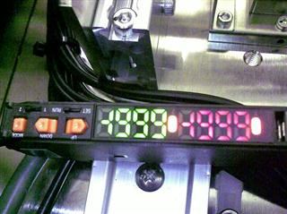
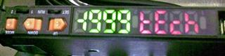
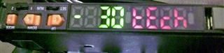
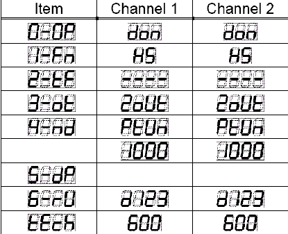
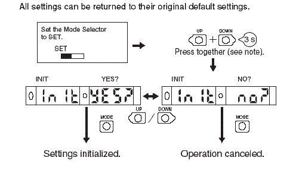
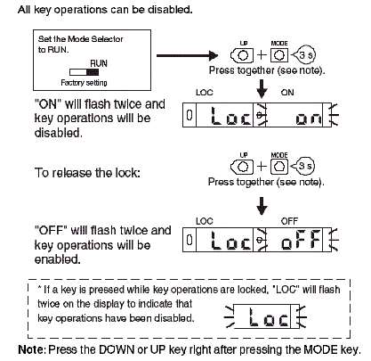

Service History
Subject: NS-8000 Initialise Fiber Amplifier
Handler Model: NS-8000 series
Controller: RC520
Date: 31 Dec 2007
When the Amplifier happen to shows negative values as what been shown below. (Figure 1)
Check the setting from the Epson NS8000 User Manual.
If the setting were correct, initialize the amplifier setting to the original default setting.(Table 1)
After initialized the setting, set back the Epson setting.
|
 |
|
|
 |
 |
Figure 1: Negative value shown on Sensor Amplifier

Table 1: Amplifier Setting according to Epson
Initializing of Amplifier Settings

If you required to disable the operation keys, followed as shown below.
Enable/Disable of Amplifier Operation Keys
